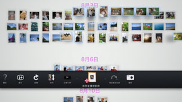

選擇喜愛的相片新建播放目錄
可集合喜愛的相片建立播放目錄。
新建播放目錄
1. |
進入相片庫區域選擇想加入播放目錄的相片，按下  |
||||||||||||
|---|---|---|---|---|---|---|---|---|---|---|---|---|---|
2. |
移動至播放目錄區域的空白位置並按下 |
||||||||||||
3. |
調整播放目錄的設定。
|
 （追加至播放目錄）。
（追加至播放目錄）。 按鈕。
按鈕。
 （音樂）中選擇幻燈片秀的BGM
（音樂）中選擇幻燈片秀的BGM提示
- 選擇
 （編輯）可日後變更已設定之內容。
（編輯）可日後變更已設定之內容。 - 可各自調整每個播放目錄的設定。
追加相片至播放目錄
1. |
選擇想追加至播放目錄的相片並按下 |
|---|---|
2. |
選擇已建立的播放目錄並按下 |
編輯播放目錄的設定
選擇想變更設定的播放目錄並按下 按鈕，再選擇（編輯）。
按鈕，再選擇（編輯）。
移動播放目錄的位置
可自由移動播放目錄的位置。選擇想移動的播放目錄並按下按鈕，再選擇 （移動)。使用左操作桿即可移動播放目錄。
（移動)。使用左操作桿即可移動播放目錄。
提示
亦可選擇播放目錄並按住 按鈕，再使用左操作桿移動。
按鈕，再使用左操作桿移動。
刪除播放目錄
選擇想刪除的播放目錄並按下按鈕，再選擇 （刪除）。
（刪除）。